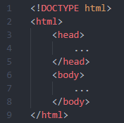

Al hablar de la estructura de una página web html podemos distinguir dos partes principales, la cabecera head y el cuerpo body. La cabecera contiene información importante para la propia página pero que el usuario no ve directamente (salvo el título), y en el cuerpo está el contenido visible de la página.
Podemos conseguir esta estructura en Visual Studio Code escribiendo ! y pulsando Enter
En la cabecera tenemos etiquetas para definir los metadatos meta como el juego de caracteres (charset) y el viewport, a continuación el título tittle y enlaces a archivos de hojas de estilo link y Javascript script. Algunas de estas etiquetas son obligatorias y otras opcionales, pero con reglas en cuanto a donde deben colocarse. Englobando la cabecera y el cuerpo tenemos la etiqueta html. Para definir el tipo de documento se utiliza la declaración !DOCTYPE.
Dentro del cuerpo body tenemos todo el contenido de la página web, por lo tanto podemos incluir en él prácticamente todas las etiquetas de HTML, sin ninguna regla en cuanto al orden de las etiquetas, sin embargo, es conveniente dar una estructura lógica a la página mediante el uso adecuado de las etiquetas semánticas. Este tipo de etiquetas permiten definir cabeceras header, cuerpo principal main, secciones section, artículos article, contenido adicional aside y pie footer. Dentro de cada una de estas partes podemos colocar las etiquetas que incorporan el contenido, párrafos p, cabeceras (h1,h2,...), listas, tablas, imágenes, vídeos, ... Si necesitamos hacer algún tipo de agrupación de etiquetas que no está contemplado por las etiquetas semánticas disponemos de la etiqueta div que crea un contenedor sin significado semántico.